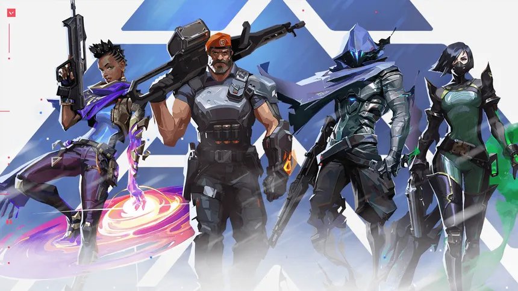

Como jogar de Controlador?

Os Controladores são a classe de VALORANT focada principalmente em controlar o mapa,
bloquear a visão dos inimigos e criar oportunidades para a equipe. Diferente de outras classes, eles
possuem habilidades que permitem manipular o campo de batalha, dificultando a movimentação dos
adversários e facilitando as jogadas da própria equipe.
Brimstone é um dos controladores mais voltados para suporte tático. Suas habilidades
permitem
lançar smokes em áreas estratégicas, dificultando a visão dos inimigos e protegendo os aliados. O
Incendiário pode ser usado para controlar áreas e forçar os adversários a se moverem, enquanto o
Estímulo Orbital oferece suporte adicional à equipe. Brimstone é ideal para jogadores que gostam de
pensar estrategicamente e coordenar as ações da equipe.
Omen é outro controlador que se destaca pela sua capacidade de manipular a visão e a
movimentação dos inimigos. Suas habilidades permitem teleportar-se para diferentes posições, criar
smokes para bloquear a visão e desorientar os adversários. Omen é eficiente para jogadores que gostam de
surpreender os inimigos e criar oportunidades para a equipe, tornando-o uma escolha versátil
para diferentes estilos de jogo.
Astra é uma controladora que se destaca por sua capacidade de manipular o mapa de forma
estratégica. Suas habilidades permitem colocar estrelas em diferentes áreas do mapa, que podem ser
utilizadas para criar oportunidades de ataque ou defesa.
Viper é uma controladora especializada em criar zonas de controle e negar áreas aos
inimigos. Suas habilidades permitem lançar nuvens de gás tóxico, que podem causar dano aos adversários e
dificultar a movimentação deles. Viper é ideal para jogadores que gostam de
controlar o ritmo da partida e criar oportunidades para a equipe, tornando-a uma escolha estratégica
para diferentes estilos de jogo.
Harbor é um controlador que se destaca por sua capacidade de manipular o mapa de forma
estratégica. Suas habilidades permitem criar barreiras de água, que podem bloquear a visão dos inimigos
e dificultar a movimentação deles. Harbor é eficiente para jogadores que gostam de controlar o ritmo da
partida e criar oportunidades para a equipe, tornando-o uma escolha versátil para diferentes estilos de
jogo.
clove revoluciona a função ao manter o domínio espacial do mapa
de maneira contínua e flexível. Sua principal ferramenta permite posicionar cortinas de fumaça
estratégicas para bloquear a linha de visão dos inimigos, isolando ângulos perigosos e facilitando tanto
a entrada nos pontos de plantio quanto a defesa das zonas sob controle da equipe. O grande diferencial
de Clove dentro do seu papel é a capacidade de continuar lançando essas fumaças mesmo depois de ser
abatida, desde que o local desejado esteja dentro do alcance da sua zona de visão pós-morte. Essa
característica garante que a sua equipe jamais perca a cobertura utilitária essencial de controle de
mapa durante as rodadas, permitindo que Clove exerça uma pressão constante sem o receio de deixar o time
desprovido de fumaças caso caia logo no início do confronto.
Milks renova a categoria ao misturar o controle de mapa
com mecânicas de suporte direto e amplificação de equipe, utilizando o poder do som e da música. Como
controlador, sua principal função de bloquear a visão dos inimigos é realizada através da habilidade
Forma de Onda, que permite posicionar fumaças ocas de longo alcance em locais
estratégicos para isolar ângulos e garantir espaço para o time.
O grande diferencial de Miks no papel de controlador é que o seu kit traz utilidades raramente vistas na
função, como a capacidade de curar aliados ou aplicar atordoamento usando ondas sonoras,
além de conceder auxílios de velocidade e cadência de tiro. Sua habilidade suprema reforça o controle de
área ao emitir uma onda de choque massiva que desorienta os adversários, ensurdece os alvos e os empurra
para fora de posições protegidas. Essa combinação permite que ele crie oportunidades agressivas e dite o
ritmo das rodadas enquanto cumpre seu papel de suporte territorial.
Página anterior Próxima página